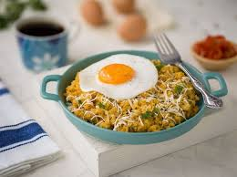

Tigrillo
Es un plato de la provincia de El Oro que consiste en plátano verde majado (cocido y machacado), mezclado con queso fresco y huevo. Se suele servir como un desayuno nutritivo, acompañado a menudo con café y chicharrón.